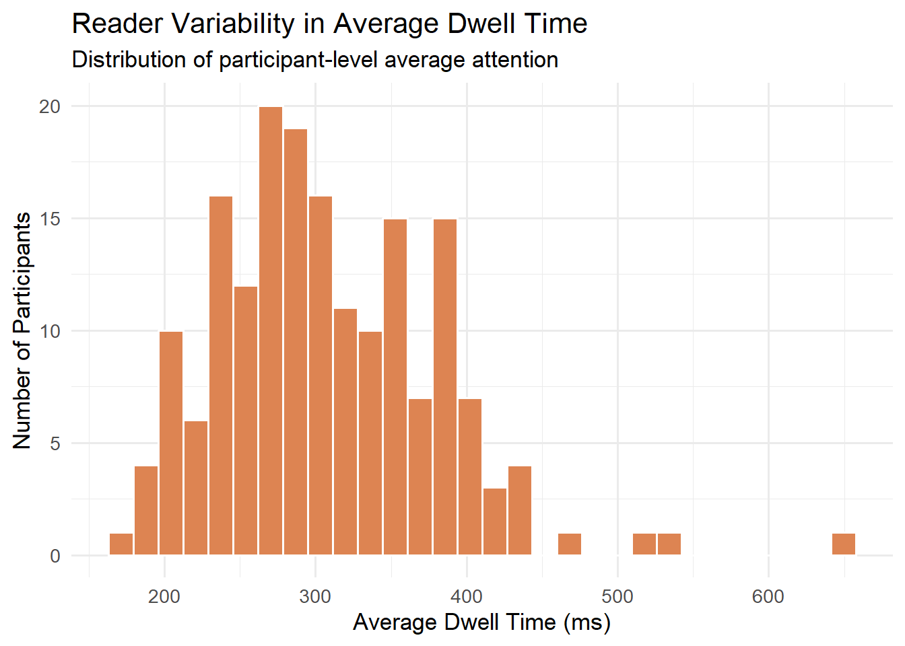
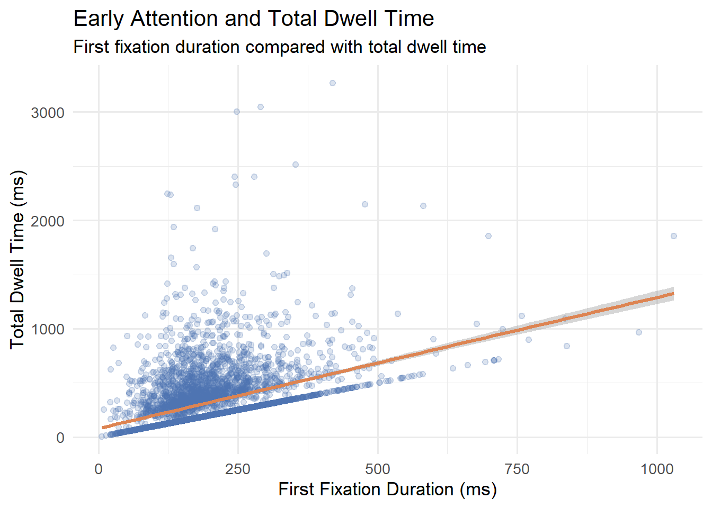

Portfolio 4: Exploratory Analysis of Reading Attention Patterns
Goal: For this piece, I wanted to do something a bit related to my research area. The dataset comes from the OneStop Eye Movements corpus (Berzak et al., 2025), a large-scale eye-tracking study published in Scientific Data that collected gaze data from 360 participants reading news articles. I am only analyzing interest area metrics, pre-defined regions of text. The goal is to examine how readers allocate visual attention across different regions of text, using eye-tracking data to identify patterns in reading behavior. If the data allows, I also want to try to examine whether early visual attention predicts overall attention during reading. Using the eye-tracking interest data, I compare first fixation duration as an early attention measure with total dwell time as a broader measure of attention. This is something that is very similar to my research, so I am excited to see how it turns out!
Load Dataset
library(tidyverse)## ── Attaching core tidyverse packages ──────────────────────── tidyverse 2.0.0 ──
## ✔ dplyr 1.2.0 ✔ readr 2.2.0
## ✔ forcats 1.0.1 ✔ stringr 1.6.0
## ✔ ggplot2 4.0.3 ✔ tibble 3.3.1
## ✔ lubridate 1.9.5 ✔ tidyr 1.3.2
## ✔ purrr 1.2.1
## ── Conflicts ────────────────────────────────────────── tidyverse_conflicts() ──
## ✖ dplyr::filter() masks stats::filter()
## ✖ dplyr::lag() masks stats::lag()
## ℹ Use the conflicted package (<http://conflicted.r-lib.org/>) to force all conflicts to become errorseye <- read_delim("data/ia_Paragraph_ordinary.csv")## Rows: 1104883 Columns: 157
## ── Column specification ────────────────────────────────────────────────────────
## Delimiter: ","
## chr (102): participant_id, EYE_REPORTED, EYE_TRACKED, IA_AVERAGE_FIX_PUPIL_S...
## dbl (51): TRIAL_INDEX, IA_AREA, IA_BOTTOM, IA_DWELL_TIME, IA_DWELL_TIME_%, ...
## lgl (4): question_preview, practice_trial, repeated_reading_trial, is_correct
##
## ℹ Use `spec()` to retrieve the full column specification for this data.
## ℹ Specify the column types or set `show_col_types = FALSE` to quiet this message.Select Relevant Variables
I will start by reducing the dataset to the variables needed for this analysis. This keeps the project focused and makes the data easier to work with.
library(tidyverse)
eye_simple <- eye %>%
select(
participant_id,
TRIAL_INDEX,
IA_ID,
IA_LABEL,
IA_DWELL_TIME,
IA_FIXATION_COUNT,
IA_FIRST_FIXATION_DURATION
)
glimpse(eye_simple)## Rows: 1,104,883
## Columns: 7
## $ participant_id <chr> "l59_485", "l59_485", "l59_485", "l59_485",…
## $ TRIAL_INDEX <dbl> 1, 1, 1, 1, 1, 1, 1, 1, 1, 1, 1, 1, 1, 1, 1…
## $ IA_ID <dbl> 1, 2, 3, 4, 5, 6, 7, 8, 9, 10, 11, 12, 13, …
## $ IA_LABEL <chr> "Leading", "water", "scientists", "have", "…
## $ IA_DWELL_TIME <dbl> 2171, 876, 640, 586, 0, 0, 0, 0, 528, 384, …
## $ IA_FIXATION_COUNT <dbl> 9, 4, 3, 2, 0, 0, 0, 0, 2, 2, 0, 1, 2, 0, 2…
## $ IA_FIRST_FIXATION_DURATION <chr> "311", "292", "191", "271", ".", ".", ".", …Convert Eye-Tracking Measures to Numeric Values
When importing the eye-tracking variables, some were imported as text, even though they represent numeric values. So, I will convert them to numeric format first so they can be summarized, visualized, and used in my analysis.
eye_simple <- eye_simple %>%
mutate(
dwell_time = as.numeric(IA_DWELL_TIME),
fixation_count = as.numeric(IA_FIXATION_COUNT),
first_fixation_duration = as.numeric(IA_FIRST_FIXATION_DURATION)
)## Warning: There was 1 warning in `mutate()`.
## ℹ In argument: `first_fixation_duration =
## as.numeric(IA_FIRST_FIXATION_DURATION)`.
## Caused by warning:
## ! NAs introduced by coercionRemove Missing or Non-Fixated Observations
Some interest areas were not fixated, meaning there was no first fixation duration or dwell time. So, I will remove rows with missing or zero values for the main measures so that the analysis focuses only on regions that received measurable visual attention.
eye_clean <- eye_simple %>%
filter(
!is.na(dwell_time),
!is.na(first_fixation_duration),
!is.na(fixation_count),
dwell_time > 0,
first_fixation_duration > 0,
fixation_count > 0
)Check Dataset Size After Cleaning
nrow(eye_simple)## [1] 1104883nrow(eye_clean)## [1] 710927Create Smaller Samples for Analysis and Plotting
After cleaning, the dataset contained 710,927 usable observations. To keep the analysis computationally manageable, I used a random sample of 50,000 observations for analysis and 5,000 observations for plotting.
set.seed(123)
eye_analysis <- eye_clean %>%
slice_sample(n = 50000)
eye_plot <- eye_analysis %>%
slice_sample(n = 5000)Descriptive Summary of Eye-Tracking Measures
Let’s first summarize the main eye-tracking variables to understand the range and typical values in the sample.
eye_summary <- eye_analysis %>%
summarise(
n_observations = n(),
n_participants = n_distinct(participant_id),
avg_dwell_time = mean(dwell_time),
avg_first_fixation = mean(first_fixation_duration),
avg_fixation_count = mean(fixation_count),
median_dwell_time = median(dwell_time),
median_first_fixation = median(first_fixation_duration)
)
eye_summary## # A tibble: 1 × 7
## n_observations n_participants avg_dwell_time avg_first_fixation
## <int> <int> <dbl> <dbl>
## 1 50000 180 315. 195.
## # ℹ 3 more variables: avg_fixation_count <dbl>, median_dwell_time <dbl>,
## # median_first_fixation <dbl>Which interest areas receive the most attention?
First, let’s explore which words or interest areas receive the highest average dwell time. This helps identify where readers spend the most visual attention.
top_interest_areas <- eye_analysis %>%
group_by(IA_LABEL) %>%
summarise(
avg_dwell_time = mean(dwell_time),
n_observations = n(),
.groups = "drop"
) %>%
filter(n_observations > 20) %>%
arrange(desc(avg_dwell_time)) %>%
slice_head(n = 15)
ggplot(top_interest_areas,
aes(x = reorder(IA_LABEL, avg_dwell_time),
y = avg_dwell_time)) +
geom_col(fill = "#4C72B0") +
coord_flip() +
labs(
title = "Interest Areas With Highest Average Dwell Time",
subtitle = "Top 15 words/regions by average visual attention",
x = "Interest Area Label",
y = "Average Dwell Time (ms)"
) +
theme_minimal(base_size = 13)
The words/interest areas with the highest average dwell times include
longer or more information-rich terms such as
Northumberland, International,
French-made, and scientists.
How much do readers vary?
Now, let’s summarize each participant’s average dwell time to examine individual differences in reading attention.
participant_attention <- eye_analysis %>%
group_by(participant_id) %>%
summarise(
avg_dwell_time = mean(dwell_time),
avg_first_fixation = mean(first_fixation_duration),
avg_fixation_count = mean(fixation_count),
.groups = "drop"
)
ggplot(participant_attention,
aes(x = avg_dwell_time)) +
geom_histogram(bins = 30, fill = "#DD8452", color = "white") +
labs(
title = "Reader Variability in Average Dwell Time",
subtitle = "Distribution of participant-level average attention",
x = "Average Dwell Time (ms)",
y = "Number of Participants"
) +
theme_minimal(base_size = 13)
The participant-level histogram shows meaningful individual
differences in average dwell time. Most readers cluster around roughly
250–400 ms, but a few participants show much higher average
dwell times.
Now that we havee explored which regions receive the most attention and how readers vary, let’s test whether early attention predicts total attention. Specifically, I am trying to examine whether first fixation duration is associated with total dwell time.
Early Attention and Total Attention
I am going to use a scatterplot to show whether interest areas with longer first fixations also tend to have longer total dwell times
ggplot(eye_plot,
aes(x = first_fixation_duration,
y = dwell_time)) +
geom_point(alpha = 0.2, color = "#4C72B0") +
geom_smooth(method = "lm", se = TRUE, color = "#DD8452") +
labs(
title = "Early Attention and Total Dwell Time",
subtitle = "First fixation duration compared with total dwell time",
x = "First Fixation Duration (ms)",
y = "Total Dwell Time (ms)"
) +
theme_minimal(base_size = 13)## `geom_smooth()` using formula = 'y ~ x'
Ok, our scatterplot shows a positive relationship between first fixation duration and total dwell time.
Interest areas that received longer initial fixations also tend to receive longer overall dwell time, suggesting that early attention is associated with sustained attention during reading.
Correlation
Now, let’s see test whether first fixation duration and total dwell time are correlated.
cor_result <- cor.test(
eye_analysis$first_fixation_duration,
eye_analysis$dwell_time
)
cor_result##
## Pearson's product-moment correlation
##
## data: eye_analysis$first_fixation_duration and eye_analysis$dwell_time
## t = 97.438, df = 49998, p-value < 2.2e-16
## alternative hypothesis: true correlation is not equal to 0
## 95 percent confidence interval:
## 0.3920900 0.4068231
## sample estimates:
## cor
## 0.3994823Pearson correlation shows a moderate positive relationship between first fixation duration and dwell time, r = .40, p < .001.
This suggests that words or interest areas that attract longer early fixations also tend to receive more total attention.
Regression
model_1 <- lm(dwell_time ~ first_fixation_duration, data = eye_analysis)
summary(model_1)##
## Call:
## lm(formula = dwell_time ~ first_fixation_duration, data = eye_analysis)
##
## Residuals:
## Min 1Q Median 3Q Max
## -345.3 -120.3 -109.5 56.4 4840.4
##
## Coefficients:
## Estimate Std. Error t value Pr(>|t|)
## (Intercept) 85.72198 2.57186 33.33 <2e-16 ***
## first_fixation_duration 1.17718 0.01208 97.44 <2e-16 ***
## ---
## Signif. codes: 0 '***' 0.001 '**' 0.01 '*' 0.05 '.' 0.1 ' ' 1
##
## Residual standard error: 230.7 on 49998 degrees of freedom
## Multiple R-squared: 0.1596, Adjusted R-squared: 0.1596
## F-statistic: 9494 on 1 and 49998 DF, p-value: < 2.2e-16In the simple regression model, first fixation duration significantly predicted total dwell time. For each additional millisecond of first fixation duration, dwell time increased by approximately 1.18 ms.
This model explained about 16% of the variance in dwell time.
Let’s add fixation count to the model now!
model_2 <- lm(dwell_time ~ first_fixation_duration + fixation_count,
data = eye_analysis)
summary(model_2)##
## Call:
## lm(formula = dwell_time ~ first_fixation_duration + fixation_count,
## data = eye_analysis)
##
## Residuals:
## Min 1Q Median 3Q Max
## -929.2 -7.3 4.9 9.8 3401.6
##
## Coefficients:
## Estimate Std. Error t value Pr(>|t|)
## (Intercept) -2.196e+02 1.043e+00 -210.5 <2e-16 ***
## first_fixation_duration 1.084e+00 4.265e-03 254.2 <2e-16 ***
## fixation_count 1.984e+02 3.346e-01 593.1 <2e-16 ***
## ---
## Signif. codes: 0 '***' 0.001 '**' 0.01 '*' 0.05 '.' 0.1 ' ' 1
##
## Residual standard error: 81.39 on 49997 degrees of freedom
## Multiple R-squared: 0.8954, Adjusted R-squared: 0.8954
## F-statistic: 2.14e+05 on 2 and 49997 DF, p-value: < 2.2e-16When adding fixation count to the model, prediction improved a lot!
First fixation duration and fixation count together explained about 89.5% of the variance in dwell time.
This suggests that total dwell time is strongly driven by both the duration of early attention and the number of fixations made on an interest area.
But on a second thouht, there might be a caveat! Because fixation count is closely related to dwell time by definition, this second model should be interpreted carefully. It is useful for showing that total reading time reflects both fixation duration and number of fixations, but fixation count is not fully independent from the outcome.
Conclusion
Overall, this analysis suggests that visual attention during reading is not evenly distributed across words or readers. Some interest areas receive substantially more dwell time, and readers vary in their average attention patterns.
The correlation and regression analyses also show that first fixation duration is positively associated with total dwell time, suggesting that early attention may help predict sustained attention during reading.